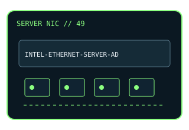

[ MODEL-SPECIFIC NETWORK HARDWARE ]
Intel Ethernet Server Adapter I350-T4
4-port Gigabit PCIe server adapter with RJ-45 interfaces. This entry uses the labeled manufacturer model identifier and cites primary product/support documentation.

MODEL IDENTIFICATION: Match the complete model/part number and hardware revision on the item label to manufacturer documentation. Do not apply this entry to near-name variants.
Exact specifications and compatibility
| Cataloged model | Intel Ethernet Server Adapter I350-T4 |
|---|---|
| Dedicated subcategory | Ethernet adapters |
| Bus / host interface | PCIe 2.1 x4 host adapter. |
| Ports / physical interfaces | 4 × 10/100/1000BASE-T RJ-45. |
| PHY, radio or protocol | Intel I350 controller; IEEE 802.3 Ethernet auto-negotiation. |
| PoE | No PoE source or PoE input is documented for this adapter. |
| Link-rate vs throughput | Up to 1Gb/s per port nominal; actual payload depends on host, driver, traffic and peer. Nominal link rates are not measured application throughput; no physical-card benchmark is claimed. |
| Firmware / driver support | Intel Ethernet drivers and NVM firmware; check OS-specific support and package notes. |
| Compatibility checks | Check PCIe lane availability, bracket height and four-port cabling. |
Model-specific notes
I350-T4 is a four-port 1GbE server adapter; it is not the dual-port I350-T2 model already cataloged.
Primary manufacturer sources
- Intel Ethernet Server Adapter I350-T4 specificationsManufacturer product specification for the exact model.
- Intel support and compatibility resourcesDriver, firmware, compatibility or lifecycle details; applicability depends on exact host and OS.